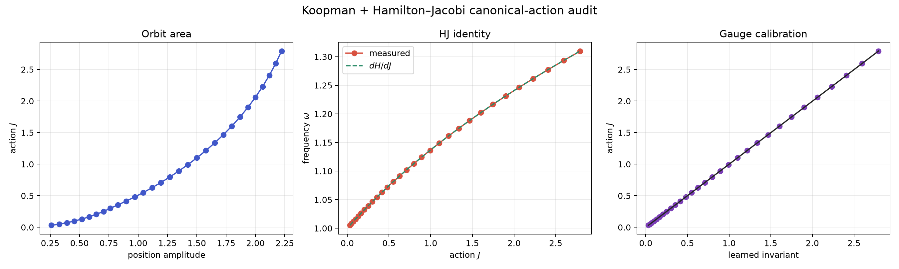

Does the learned foliation line up with Hamilton–Jacobi action?
supported_on_supplied_periodic_orbits
This audit measures J = (1/2π)∮p dq directly from each supplied closed orbit. It then tests dH/dJ = ω when a reference Hamiltonian is available and calibrates the learned invariant against J when a model is supplied.

Measured evidence
- PASS — enough closed orbits
- PASS — orbit closure is accurate
- PASS — action is ordered
- PASS — hamilton jacobi identity holds
- PASS — learned invariant calibrates to action
Hamilton–Jacobi identity: normalized RMSE 0.008%; median relative error 0.007%.
Learned coordinate: held-out monotone-calibration R² 1.0000; |rank correlation| 1.0000.
Scientific boundary
This is a one-degree-of-freedom, autonomous, conservative, periodic-orbit audit. The two supplied state columns must be canonical position and momentum. Velocity is momentum only after the correct mass scaling. This result does not claim a global generating function, a phase chart through a turning point, multi-degree integrability, or a Hamilton–Jacobi–Bellman solution.
What it unlocks
The existing neural invariant is free up to a monotone gauge. Empirical action anchors that gauge to a canonical physical quantity. The next construction can learn a conjugate phase, enforce {φ,J} = 1, and test the HJ PDE and Koopman eigenfunction residuals on held-out tori.
Machine-readable evidence: manifest.json.